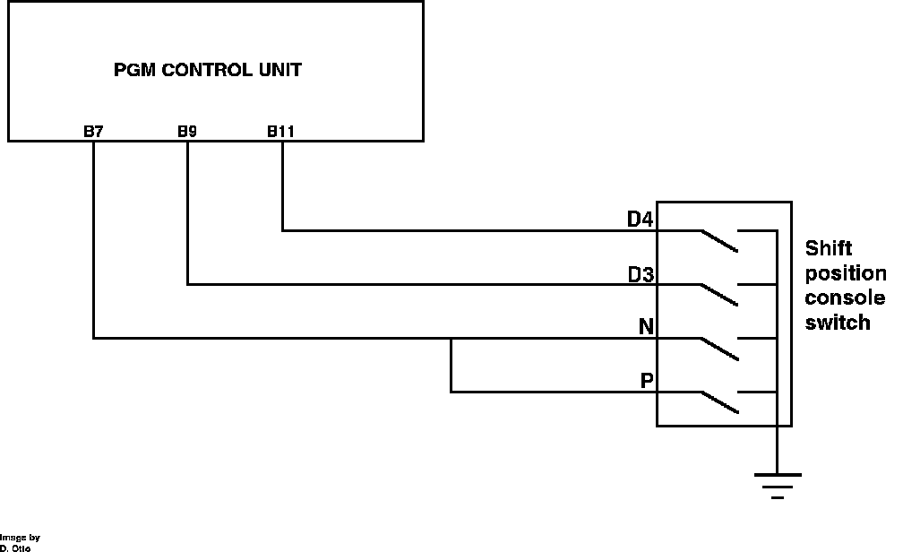

A/T Shift Position Signal
A/T Shift Position Signal:

The A/T shift position signal is provided by a console mounted shift position switch. The switch functions by grounding an input line on the ECU depending on the location of the shifter. The switch reports to the ECU when the transmission is in gears D3, D4, P, or N. Gears D3 and D4 each use a separate input line while gears P and N share an input to the ECU.